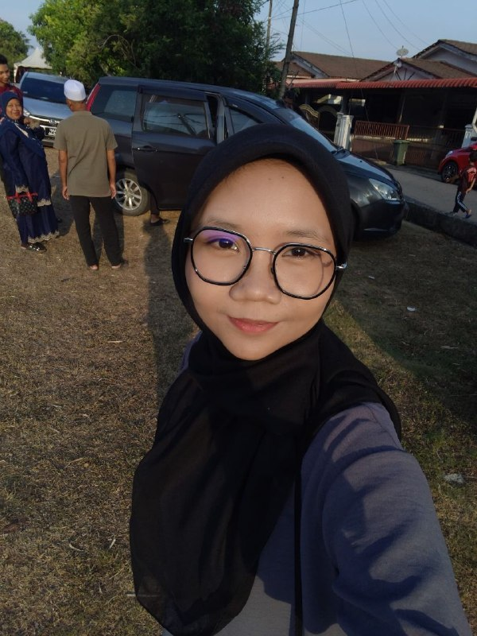
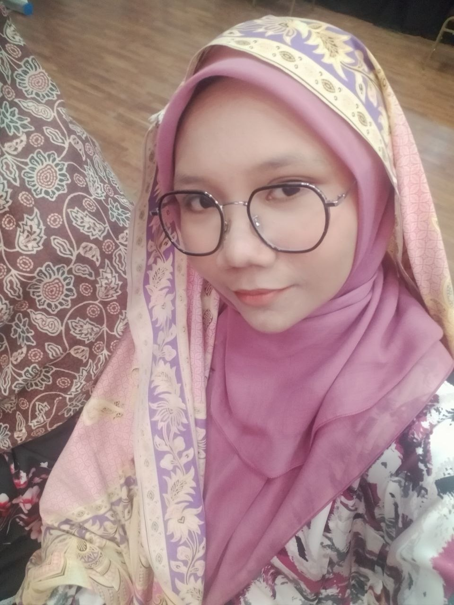
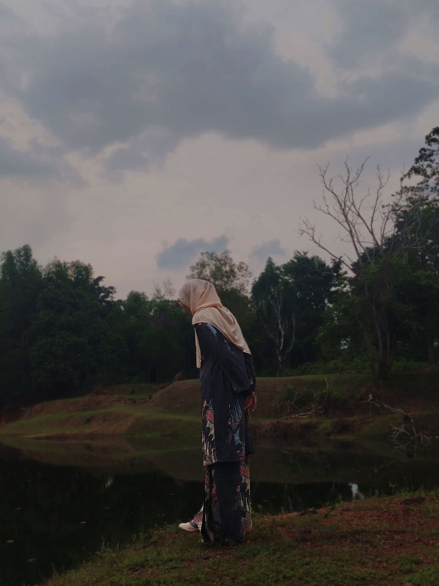
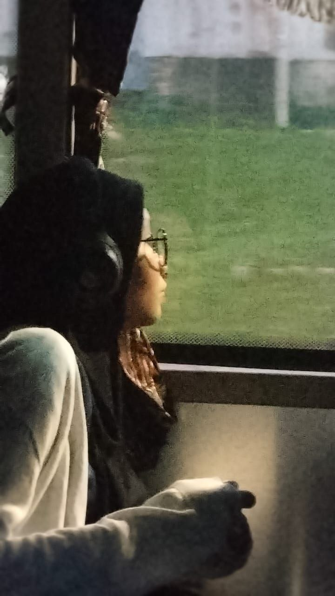
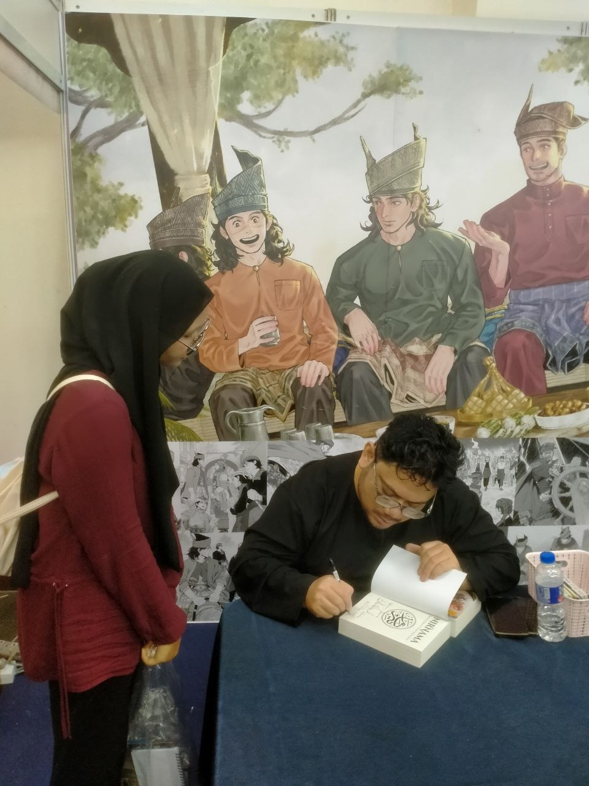
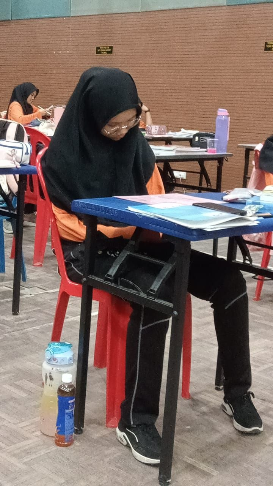
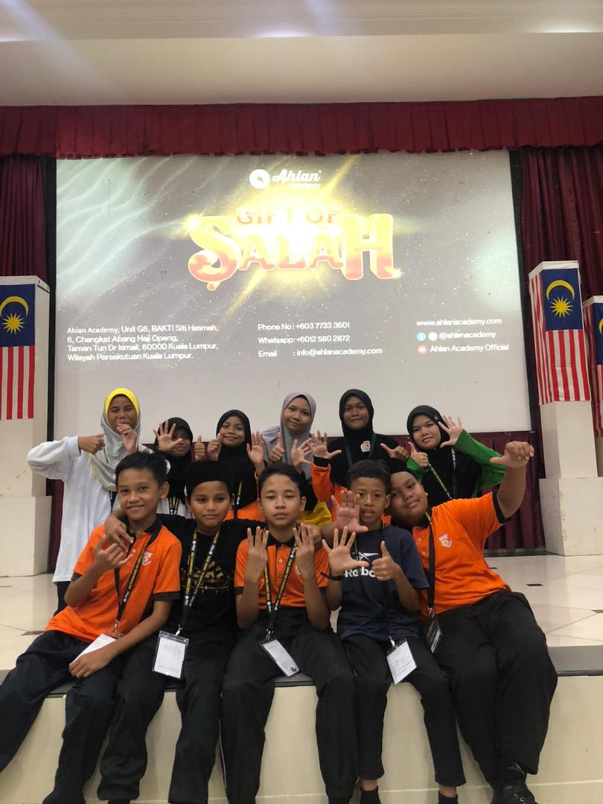
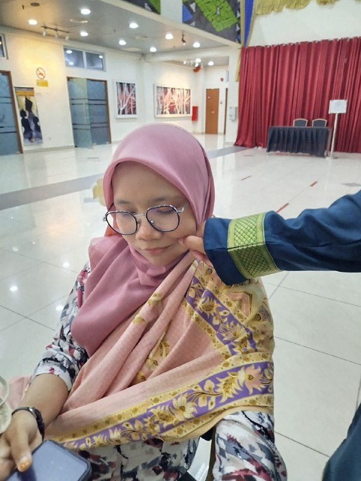

AIRA SHUU
Reader • Dreamer • Story Collector
Welcome to About Thyself
Dear Gentle Readers,
It seems only proper that I introduce the author behind these pages, Miss Aira.
A student with a fondness for books, melodies, and stories of her life that linger even after the chapter ends.
She loves trying new things, thinks of meaningful quotations, and believes that every chapter,
no matter how small, has a story worth telling
Should you wish to know her better, I invite you to continue reading.
|
Contents
|
Personal Info
| The Archive |
The Records |
| Full Name |
Siti Humairah binti Anuar |
| Alias |
Aira
Maira
Shumairah
Aira Shuu
Yera
Shuu
|
| Birthday |
July 12, 2006 |
| Zodiac |
Cancer |
| MBTI |
INFP (2022-2025) |
| Occupation |
Student / Keeper of Dreams |
| Education |
SK Bukit Naga (2013-2018)
SM Sains Banting (2019-2023/24)
UiTM Cawangan Kedah (2024-current) |
|
Potrait

A collector of stories,
dreams, and memories.
|
Little facts about the Author
- 📖 My bookshelf grows faster than my reading list shrinks.
- 🎭 I enjoy both writing original characters and exploring existing fictional universes..
- ✍️ I love creating stories and imagining detailed fictional worlds.
- 🎵 I enjoy listening to music while reading or daydreaming.
- 🌠 I believe every person has a story worth telling.
The Author's Pastimes
| Treasured Pursuits |
Their Stories |
| Reading |
Books, Novels, Manga and Comics |
| Music |
Listening to songs from various artists. Almost the whole time streaming songs. |
| Writing |
Creating stories and character ideas. Sometimes would just make a short prompt due to hectic schedules. |
| Watching |
Movies, dramas, and series |
Potraits from the Chronicles
|

Beneath the Stage Lights
Supporting Qie during Hari Tanggang Muzikal.

A moment by the Lake
Niat nk terjun tapi lawa pulak gambar

Outside the window
Luar Bas ada apa tu?? Ehh, Kawasaki Ninja H2R!!

PBAKL26
First day PBAKL2026.. Hilal Asyraf is signing my books!!!

SPM
Cikgu tak join dalam dewan, jadi tidur la.

Facilitator
Last day jadi faci kat budak sekolah rendah!!

RAWR
Mira kacau saya. Saya tak bersalah.
|
Echoes in Ink
- "People's lives don't end when they die. It ends when they lose faith."
- "You expect so much from me, yet I'm just an adult who wish to become a child again."
- "To crush your enemies, to see them driven before you, and to hear the screaming of them falling beneath me"
- "You saw me. That was enough. But I can't stay where I drown."
- "Loyalt is a currency. And they bet on the wrong bank."
- "I stay loyal to what was killing me."
Visions of Tomorrow
- Travel to different countries
- Continue creating stories and characters
- Keep learning and growing every day
- Save Money so that I can at least let my parents go to on a Hajj
- Build a life filled with meaningful stories and memories with my love ones
|